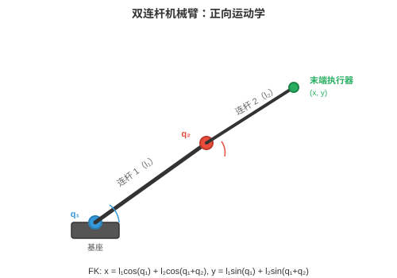
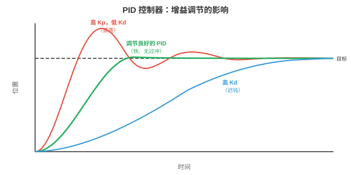
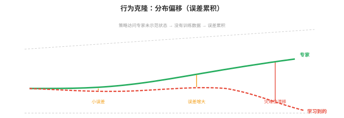
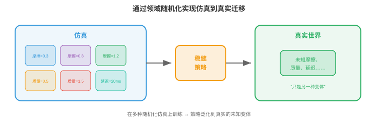

机器人学习¶
机器人学习弥合算法与物理行动之间的鸿沟。本节涵盖运动学、动力学、经典控制、模仿学习、仿真到真实迁移、操作、运动和安全，这些技术赋予机器人移动、抓取、行走并与真实世界交互的能力。
- 前几章中，我们学习了如何感知世界，第 8 章和本章第 1 节，以及如何从数据学习，第 6 章。但感知和学习还不够。机器人必须行动（act）：移动手臂抓住杯子、走过不平地面、在仓库中导航。这正是机器人学习的用武之地。
大白话
看懂环境和学到规律还不够，机器人最终要把判断变成可靠动作。机器人学习研究的就是怎样让它动得对。
- 核心挑战在于物理世界连续、高维、接触丰富且不容失误。图像识别中的分类错误只是标签错误；机器人学中的控制错误可能是机器人损坏或物体掉落。代价完全不同。
大白话
机器人犯错会真的撞、摔或伤人，不能像网页程序那样出错后重试。因此它必须同时追求效果、稳定和安全。
机器人运动学¶
- 运动学（kinematics）描述不考虑力的运动几何。机械臂是由关节连接的刚性连杆链。每个关节有一个自由度，DoF：要么旋转，旋转关节，要么滑动，移动关节。
大白话
运动学先不问马达需要多大力，只研究关节怎样转或滑时，机械臂各部分会出现在什么位置。
- 机器人的构型（configuration）是所有关节角度，或位移，的集合 \(\mathbf{q} = [q_1, q_2, \ldots, q_n]^T\)。这个向量位于关节空间（joint space），或构型空间：一个每条轴对应一个关节的 \(n\) 维空间。六自由度机械臂具有六维构型空间。
大白话
构型就是机器人此刻每个关节分别摆在什么位置。把所有关节数值放进一个向量，便能用一个点描述整台机械臂的姿势。

- 正向运动学（forward kinematics，FK）根据关节角度计算末端执行器，即“手”，的位置和姿态。这是函数 \(\mathbf{x} = f(\mathbf{q})\)，将关节空间映射到任务空间（task space），即末端执行器的三维位置和姿态，也称笛卡尔空间。
大白话
正向运动学的方向是“已知每个关节怎么摆，算手会到哪里”。它像把每段机械臂依次拼起来算最终手的位置。
- 每个关节由 \(4 \times 4\) 齐次变换矩阵描述，回顾第 2 章仿射变换。Denavit-Hartenberg（DH）约定以四个数参数化每个关节：连杆长度 \(a\)、连杆扭角 \(\alpha\)、连杆偏距 \(d\) 和关节角 \(\theta\)。关节 \(i\) 的变换为：
大白话
DH 约定用四个参数把每个关节的长度、偏移和转角统一写进矩阵，方便用同一套规则描述不同机械臂。
- 完整的正向运动学是全部关节变换的乘积：\(T_{0 \to n} = T_1 T_2 \cdots T_n\)。这就是将变换链式相乘的矩阵乘法，第 2 章：依次应用每个关节的变换，将坐标系从基座旋转、平移到末端执行器。
大白话
把每一节的变换矩阵按顺序相乘，就能从底座一路算到手的位置和朝向。
- 逆运动学（inverse kinematics，IK）是反向问题：给定期望末端执行器位姿 \(\mathbf{x}^*\)，寻找关节角 \(\mathbf{q}\)，使 \(f(\mathbf{q}) = \mathbf{x}^*\)。它困难得多，因为：
大白话
逆运动学问的是“手想去这里，关节该怎么摆”。方向反过来后，答案可能不止一个，也可能根本够不着。
-
映射是非线性的，涉及正弦和余弦。
大白话
关节转动带来三角函数，不能像普通线性方程那样一次消元求解。
-
可能有多个解，不同机械臂构型到达同一点。
大白话
手到同一个位置时，手肘可以朝上也可以朝下，所以系统还要按避障、舒适或能耗选择一个解。
-
也可能无解，目标超出可达范围。
大白话
目标太远、角度受限或会碰撞时，数学上就没有可执行的关节配置。
- 解析解只对特定机器人几何存在。对于一般机器人，IK 使用雅可比矩阵（Jacobian）迭代求解。雅可比矩阵 \(J(\mathbf{q})\) 将关节角的微小变化关联到末端执行器位置的微小变化，回顾第 3 章雅可比矩阵：
大白话
雅可比矩阵像机械臂当前姿势下的局部说明书：每个关节稍微动一点，手会往哪些方向移动。
- 要使末端执行器移动微小量 \(\Delta \mathbf{x}\)，需要 \(\Delta \mathbf{q} = J^{-1} \Delta \mathbf{x}\)，或使用伪逆 \(J^+ \Delta \mathbf{x}\)；当 \(J\) 非方阵时使用后者。反复迭代直到末端执行器到达目标；本质上是将第 3 章牛顿法应用于运动学方程。
大白话
IK 通常反复按这个局部说明做小修正，直到手逐渐靠近目标。
- 在奇异位形（singularities）附近，雅可比矩阵失去秩，某些列变得线性相关，见第 2 章。物理上这意味着机器人失去一个自由度：无论关节移动多快，末端执行器也无法向某些方向移动。伪逆在奇异位形附近会发散，因而改用阻尼最小二乘法，即添加正则化项 \(\lambda^2 I\)：
大白话
奇异位形像手臂完全伸直时，有些方向已经很难再微调。阻尼项会限制过大的关节修正，宁可慢一点也不让数值失控。
动力学与控制¶
- 动力学（dynamics）将力纳入问题。机械臂的运动方程遵循机械臂方程（manipulator equation）：
大白话
动力学不只问“会到哪里”，还问“要施加多大力矩才会这样动”。它把惯性、速度效应和重力都算进来。
- 其中 \(M(\mathbf{q})\) 是质量，即惯性，矩阵；\(C(\mathbf{q}, \dot{\mathbf{q}})\) 刻画科里奥利和离心效应；\(\mathbf{g}(\mathbf{q})\) 是重力向量；\(\boldsymbol{\tau}\) 是关节力矩向量，即控制输入。这是一个二阶微分方程组，每个关节一个方程。
大白话
机器人每个关节受的力矩，要同时克服自身重量、带动质量和处理运动中的耦合效应，不能只靠位置误差硬拉。
- 质量矩阵 \(M\) 总是对称正定的，回顾第 2 章，正定矩阵保证唯一最小值；这里它确保系统对施加力矩产生可预测响应。
大白话
质量矩阵的好性质保证动力学不会出现荒谬的响应：给定力矩，系统的加速度关系是稳定、可预测的。
-
PID 控制（PID control）是机器人学中应用最广的控制器。对每个关节，它根据误差 \(e(t) = q_{\text{desired}}(t) - q_{\text{actual}}(t)\) 计算力矩：
\[\tau(t) = K_p e(t) + K_i \int_0^t e(s) \, ds + K_d \dot{e}(t)\]大白话
PID 就像持续纠偏：看现在差多远、过去一直差多少、以及误差变化得多快，再合成下一次施力。
三项的作用直观可见：
- 比例项（Proportional），\(K_p\)：按当前误差成比例修正。误差越大，修正越大，如同弹簧将关节拉向目标。
大白话
比例项只看眼前差距，离目标远就用更大力往回拉。
- 积分项（Integral），\(K_i\)：积累过去误差，消除稳态偏移。若关节持续欠冲，积分项会累积并提供额外推动。
大白话
积分项记住长期没补上的小误差，防止系统一直差一点却不再改进。
- 微分项（Derivative），\(K_d\)：对误差变化速率作出反应，提供阻尼。误差缩小时它减慢响应，防止过冲和振荡。
大白话
微分项像刹车，看到系统正快速冲向目标时提前减速，避免冲过头后反复摇摆。

- 调整 \(K_p, K_i, K_d\) 是一种平衡：过大的 \(K_p\) 导致振荡，过大的 \(K_d\) 使系统迟钝，过大的 \(K_i\) 导致积分饱和，持续误差下积分无界增长。
大白话
PID 没有万能参数：推得太猛会来回摆，刹得太狠会反应慢，记忆误差太强又会越积越失控。
- 模型预测控制（Model Predictive Control，MPC）着眼未来。在每个时间步，它求解一个优化问题：在动力学模型和约束下，寻找有限时域内最小化代价函数，例如跟踪误差加控制代价，的未来控制序列。只施加第一个控制，再在下一时间步重复这一过程。
大白话
MPC 每一步都会先在脑中预测未来几步，找出既接近目标又不违反限制的动作计划，但只执行第一步，再根据新情况重新规划。
- 此处 \(\|\mathbf{x}\|_Q^2 = \mathbf{x}^T Q \mathbf{x}\) 是使用正定矩阵 \(Q\) 的加权范数，第 2 章，使你能对不同状态误差施加不同惩罚。MPC 能自然处理约束，关节限制、力矩限制、避障，因为它们被显式写入优化问题。
大白话
代价函数决定什么更重要，例如位置误差还是省力；约束直接写进求解器，所以“不要撞、不要超关节极限”不是事后补救。
- 阻抗控制（impedance control）调节力与运动之间关系，而不追踪刚性轨迹。它不命令“到位置 \(x\)”，而是命令“表现得像以 \(x\) 为中心的弹簧-阻尼系统”：
大白话
阻抗控制不强迫手一定走到精确坐标，而是规定它该有多硬、多能让步，像带弹簧和阻尼的手。
- 其中 \(K_s\) 是刚度矩阵，\(D\) 是阻尼矩阵。这使机器人具有柔顺性：接触障碍物时会让步，而不是强行推进。阻抗控制对插销入孔、将物品递给人等接触丰富任务必不可少。
大白话
接触人或物体时，太硬会顶坏东西，太软又做不成事。刚度和阻尼让机器人能安全地顶、插、递和贴合。
模仿学习¶
- 我们可以不手工设计控制器，而是从示范中学习控制策略。人完成任务，机器人观察，学习算法提取策略。这就是模仿学习（imitation learning），或从示范学习。
大白话
模仿学习让机器人先看人怎么做，再把观察和动作之间的规律学出来，省去手写大量控制规则。
- 行为克隆（behavioural cloning，BC）是最简单的方法：将示范视作监督学习数据集。给定专家的观察-动作对 \(\{(\mathbf{o}_t, \mathbf{a}_t)\}\)，训练策略 \(\pi_\theta(\mathbf{a} \mid \mathbf{o})\)，从观察预测专家动作。这是标准监督学习，第 6 章：最小化损失：
大白话
行为克隆把专家演示当成“看到这个情况就做这个动作”的练习题，直接学习模仿专家。

- 问题在于分布偏移（distribution shift），也称误差累积问题（compounding error problem）。训练时，策略看到专家状态；部署时，策略自身的小误差将其推到专家从未访问过的状态。这些陌生状态导致更差动作，又导致更陌生状态，误差迅速累积。
大白话
训练数据只教了机器人“走在正确路线上怎么办”。它一旦自己偏一点，就进入没见过的情况，越慌越偏。
- 想象通过观察完美驾驶员学习开车。你从未看见轻微偏航后会发生什么，因为专家从不偏航。第一次轻微偏离时，你不知道如何恢复。
大白话
只看完美示范会学到正常操作，却学不到补救动作。现实里最重要的往往正是偏了以后怎样拉回。
- DAgger（Dataset Aggregation）通过迭代解决这一问题：
大白话
DAgger 让当前机器人自己上场，专门收集它会犯错的状态，再请专家教这些状态该怎么处理。
-
在当前数据上训练策略。
大白话
先用已有示范训练出当前版本的策略。
-
在环境中运行策略，收集新状态。
大白话
让策略实际执行，暴露它真正会走到的陌生状态。
-
请专家为新状态标注正确动作。
大白话
即使机器人做错了，也让专家告诉它此刻应该怎样恢复。
-
将新数据加入数据集并重新训练。
大白话
把这些补救样本加入下一轮训练，策略就会逐步学会处理自己的错误。
- 经过多轮迭代，数据集覆盖学习到的策略实际访问的状态，而不只是专家轨迹。策略会改进，因为它看见并学会从自身错误中恢复。
大白话
多轮后，训练集不再只包含理想路线，也包含真实执行时常见的偏差和恢复办法，部署更稳。
- 使用 Transformer 的动作分块（Action Chunking with Transformers，ACT）是现代方法：策略预测未来动作序列，即一个“块”，而不是一次预测一个动作。它使用以 Transformer 为主干的条件 VAE 实现。预测动作块更稳健，因为它捕获时间相关性：伸手动作的平滑性被编码在块中，而不依赖会漂移的自回归单步预测。
大白话
ACT 不只决定下一毫秒怎么动，而是一次规划一小段连续动作。这样伸手、抓取等动作更顺滑，不容易逐步累积抖动。
- 扩散策略（Diffusion Policy）将第 8 章扩散模型应用于动作生成。它不预测单一动作，而是建模以观察为条件的全部可能动作分布。从噪声开始，它迭代去噪生成动作序列。这能自然处理多模态性（multimodality）：任务存在多种有效完成方法时，例如从左侧或右侧伸手，扩散模型能表示两个模式；回归策略会将它们平均，伸向中间，而中间可能两边都无效。
大白话
有些任务本来就有多种正确做法。扩散策略能保留“从左拿”或“从右拿”两个选择，普通回归却可能平均成一个两边都拿不到的动作。
仿真到真实迁移¶
- 在真实世界训练机器人昂贵、缓慢且危险。机器人通过试错学习抓取可能要数千次尝试，期间会损坏物体和自身。仿真（simulation）提供无限、安全、快速的经验。但模拟器并不完美：物理是近似的，视觉是合成的，接触被简化。
大白话
真实机器人摔一次就可能花钱和花时间，仿真能让它反复失败而不受伤，但仿真永远不可能和现实完全一样。
- 仿真到真实差距（sim-to-real gap）是模拟与真实表现之间的差异。在仿真中完美运行的策略可能在真实机器人上完全失败，因为它过拟合了模拟器特有细节。
大白话
机器人可能学会的是“模拟器里的物理规律”，一换成真实摩擦、延迟和噪声就不会做了，这就是仿真到真实的鸿沟。

- 领域随机化（domain randomisation）通过在广泛模拟器设置上训练来应对这一问题。不是使用一个仿真，而是使用数千个随机化的仿真：
大白话
领域随机化故意让模拟世界千变万化，逼策略别依赖某一套固定纹理、摩擦或马达参数。
-
物理：摩擦系数、质量、阻尼。
大白话
每次让物体更滑、更重或阻尼不同，训练策略适应物理不确定性。
-
视觉：光照、纹理、颜色、相机位置。
大白话
改变灯光和外观，避免模型只会识别模拟器里某种固定画面。
-
动力学：电机延迟、噪声水平。
大白话
模拟控制指令不立即生效和传感器有噪声，使策略更接近真实硬件环境。
- 思路是，若策略在这些变体上都有效，真实世界只是该分布中的“另一种变体”。策略学习对随机化属性不变的特征，这些不变特征可迁移。
大白话
在很多变化条件下都能成功的策略，更可能把现实当成又一个普通变化，而不是一上真实机器就失效。
- 系统辨识（system identification）采取相反做法：不随机化一切，而是仔细测量真实系统的物理参数，并将模拟器调到匹配。这会得到更精确的仿真，但很脆弱，任何未建模效应都会造成差距。
大白话
系统辨识努力造一个尽可能像真实机器的模拟器，效果精细但依赖测得准；漏掉一个效应，迁移仍可能出问题。
- 实践中，最佳结果会结合两者：先用系统辨识让模拟器足够接近，再用领域随机化覆盖剩余不确定性。
大白话
先把模拟器调到大致真实，再在周围随机扰动，既不从完全错误的起点学习，也不假装参数绝对准确。
- 通过微调实现仿真到真实（sim-to-real via fine-tuning）主要在仿真中训练，随后进行少量真实世界微调。仿真提供良好初始化，真实数据修正模拟器特有偏差。它比从头训练需要少得多的真实数据。
大白话
仿真先打基础，真实数据最后校准。这样只需少量昂贵的真实试验，就能纠正模拟世界学来的偏差。
面向机器人的世界模型¶
- 上述全部强化学习和模仿学习方法都是无模型（model-free）的：策略通过直接交互，或示范，学习行动，而不显式建模世界如何运行。另一种方法是基于模型（model-based）学习：先学习环境动力学模型，再使用模型规划或生成合成经验。
大白话
无模型方法直接学“现在该做什么”；基于模型方法先学“做了会发生什么”，再利用这个内部预测来选动作。
- 世界模型（world model）学习转移函数 \(p(s_{t+1} \mid s_t, a_t)\)：给定当前状态和动作，预测下一个状态，第 10 章已经介绍。在机器人学中，这意味着预测机器人采取特定动作后会发生什么：“若我将这块积木推向左边，它会滑动 3cm，后面的杯子会倾倒。”
大白话
世界模型是机器人脑中的小型物理预演器，能在动手前估计推、抓、碰之后会造成什么结果。
- 吸引力在于样本效率（sample efficiency）。真实世界机器人交互代价高。若机器人能从适量真实数据学习世界模型，它就能在内部展开模型，“想象”数千条轨迹，在不接触物理世界的情况下规划并改进策略。这类似棋手在脑中模拟走法来提前思考。
大白话
一次真实动作可能昂贵或危险，而内部想象可以反复试。世界模型让机器人少做现实试错，多做脑内演练。
- DreamerV3 是通用的基于模型 RL 智能体。它联合学习三个部分：
大白话
DreamerV3 把“看懂状态、预测未来、估计奖励”分成三个可学习部件，再在想象环境里训练动作策略。
-
表征模型（representation model）：将观察编码为紧凑潜在状态。
大白话
它把原始图像或传感器数据压成更容易计算的内部状态。
-
转移模型（transition model），即世界模型：根据当前状态和动作预测下一个潜在状态。
大白话
它负责回答“在这个状态做这个动作，下一刻内部状态会怎样变”。
-
奖励模型（reward model）：根据潜在状态预测奖励。
大白话
它估计未来状态好不好，给规划和策略学习提供方向。
- 智能体随后在潜在空间中多步展开转移模型来“做梦”，用这些想象轨迹训练策略，并将策略转移到真实环境。关键创新是全部想象发生在潜在空间，即紧凑学习表示，而非像素空间，因此计算上可行。
大白话
机器人不在脑中渲染每个像素，而是在压缩状态里快速模拟很多步，这才有足够速度用想象结果训练策略。
大白话
第一个函数预测下一状态，第二个函数预测当前状态值多少奖励。两者合起来让策略既能看未来，也能比较不同选择的好坏。
- 转移模型 \(f_\theta\) 和奖励模型 \(g_\theta\) 在真实经验上训练，策略在想象展开上训练。这将数据收集与策略优化解耦。
大白话
真实交互主要用来把世界模型学准，策略改进则主要在内部模拟完成，减少了对真实机器的消耗。
- 对机器人操作，世界模型支持心理演练（mental rehearsal）。在尝试抓取前，机器人可在学习到的模型中模拟多种接近方式，选择最可能成功的一种。这对真实世界试错缓慢且危险的接触丰富任务尤其有价值。
大白话
抓取前先在脑中试几种手势，选最稳的一种再动手，能显著减少真实物体被碰倒或抓空的次数。
- 世界模型还自然连接到仿真到真实（sim-to-real）：在真实数据上训练的世界模型本质上是学习到的模拟器，自动捕获真实世界物理，从而完全绕开仿真到真实差距。对于理解充分的场景，它可能不如手工模拟器精确，但能捕获手工模拟器常常建模错误的效应，摩擦、变形、接触动力学。
大白话
从真实数据学出的世界模型不必先手工写全物理公式，它能直接吸收真实摩擦、软硬和接触效果，但也受训练数据覆盖范围限制。
- JEPA（Joint Embedding Predictive Architecture，第 10 章介绍）提供像素级预测的替代方案。JEPA 不预测精确未来观察，而是在嵌入空间预测：“下一状态的潜在表示将接近这个向量。”这避开预测像素级精确未来的困难，那既不必要又浪费计算，并专注预测对决策重要的未来方面。
大白话
JEPA 不要求准确预言未来每个像素，而是预测对行动有用的状态变化，例如物体是否移动、是否接近碰撞。
- 世界模型的局限是预测误差累积（compounding prediction error）。转移模型的小误差在长展开中累积，使想象轨迹偏离现实。缓解方法包括较短的想象时域、集成模型，利用不确定性检测预测何时不可靠，以及定期用新鲜真实数据让模型重新落地。
大白话
世界模型预测得越远，误差越会一层层放大。实际系统要限制想象长度、识别不确定情况，并不断用真实数据校准。
操作¶
- 操作（manipulation）是使用机器人末端执行器与物体交互的技艺：拾取、放置、推动、插入、装配。
大白话
操作就是让机器人不只移动自己，还能可靠地改变物体的位置和状态，例如拿起、推开或装配。
- 抓取（grasping）是基础操作技能。目标是找到稳定抓取姿态：使夹爪能牢固持住物体的位置和方向。
大白话
抓取不是碰到物体就行，而是要选一个夹爪位置和角度，保证拿起来不会滑、不会转、不会掉。
- 解析抓取规划（analytical grasp planning）使用物理学。若接触力能抵抗外部扳手力，即力和力矩，抓取便稳定。对平行夹爪，最简单准则是力封闭（force closure）条件：接触法线必须张成全部力方向，使抓取能抵抗任意扰动。这涉及检查抓取扳手矩阵的秩，是第 2 章秩概念的直接应用。
大白话
力封闭的意思是夹爪从不同方向施力后，能抵抗物体受到的任何小推拉和转动，不会一碰就掉。
- 数据驱动抓取（data-driven grasping）学习从传感器输入预测抓取成功。给定桌上物体的深度图，网络为每个候选夹爪姿态预测抓取质量得分。GraspNet 和类似架构使用点云编码器，PointNet 风格，第 8 章，预测带置信度得分的六自由度抓取姿态，位置加方向。
大白话
数据驱动方法不必为每种复杂物体手写物理规则，而是从大量成功和失败样本中学会哪些抓取位置更稳。
- 灵巧操作（dexterous manipulation）超越简单的抓取放置。多指手拥有 20 多个自由度，能完成手内旋转，在手指间转笔、工具使用和精密装配等任务。状态空间极大且接触复杂，使它成为机器人学最困难的问题之一。
大白话
多指手像人手一样灵活，但每根手指都可能接触、滑动和互相影响，组合情况爆炸，因此比普通夹爪难很多。
- 学习灵巧操作常在具有大量领域随机化的仿真中使用强化学习，第 6 章。OpenAI 使用 Shadow 手解决魔方的工作，在随机物理的仿真中训练 PPO 策略，成功迁移到真实机器人手。
大白话
灵巧操作真实试错太难，通常先在大量随机模拟里练出策略，再把它迁移到真实机械手。
- 插销入孔、擦拭表面等接触丰富任务（contact-rich tasks）要求机器人与环境保持受控接触。这些任务需要力感知和柔顺控制，即阻抗控制；接触物理难以建模，因此难以准确仿真。
大白话
插入和擦拭要一边施力一边调整，不能只追位置。接触细节非常复杂，这也是从仿真迁移时最容易出错的部分。
运动¶
- 运动（locomotion）是让机器人身体穿行于世界：行走、奔跑、攀爬、游泳。它与操作的关键区别是，机器人必须在移动时保持平衡，并且与地面的接触点会随时间变化。
大白话
运动不仅是往前走，还要在不断改变落脚点时不摔倒。它比固定底座机械臂多了平衡这个持续难题。
- 足式运动（legged locomotion）具有挑战性，因为它内在不稳定。双足机器人，即人形机器人，在迈步时单腿站立，像倒立摆。质心必须保持在支撑多边形，即接触地面足部的凸包，上方，否则机器人会跌倒。
大白话
人形走路时经常只有一只脚支撑，身体重心必须落在脚能支撑的范围内，否则就会像倒立的扫把一样倒下。
- 零力矩点（Zero Moment Point，ZMP）是地面上重力与惯性力合力矩为零的点。若 ZMP 保持在支撑多边形内，机器人不会倾倒。Honda ASIMO 等传统人形控制器规划使 ZMP 保持在边界内的轨迹。
大白话
ZMP 是衡量平衡的一个地面位置。只要这个点还在脚底支撑范围里，机器人就有机会稳住；跑出范围就容易翻倒。
- 中央模式发生器（Central Pattern Generators，CPGs）是受生物学启发的、基于振荡器的控制器。动物用脊髓神经回路生成有节律的运动模式，步行、小跑、疾驰，无需大脑持续参与。CPG 模型使用耦合微分方程：
大白话
CPG 让每条腿像一个节拍器，彼此保持合适节奏。这样能自然产生重复而协调的步态，不必每一瞬间都重新规划。
- 其中 \(\phi_i\) 是振荡器 \(i\) 的相位，\(\omega_i\) 是自然频率，\(w_{ij}\) 是耦合强度，\(\psi_{ij}\) 是期望相位偏移。不同相位关系产生不同步态：所有腿同步，跳跃；交替成对，小跑；依次运动，步行。正弦耦合自然同步振荡器，类似第 3 章傅里叶级数将运动分解为频率分量。
大白话
只要改变各腿之间该相差几个节拍，同一套振荡器就能切换走路、小跑或跳跃等步态。
- 用于运动的强化学习（reinforcement learning for locomotion）已成为敏捷四足与人形机器人的主流方法。机器人在仿真中通过试错，第 6 章，学习策略 \(\pi(\mathbf{a} \mid \mathbf{o})\)；对前进速度、稳定性和能效给予奖励，对跌倒、违反关节限制和抖动动作施加惩罚。
大白话
运动 RL 通过奖励“走得快、稳、省电”，惩罚“摔倒、抖动、超限制”，让机器人在大量模拟试错中找到步法。
- 近期工作，例如 Agility Robotics、Boston Dynamics 和学术实验室，的关键洞见是：RL 训练的运动策略远比手工设计控制器稳健。它们自然学会从推搡中恢复、适应地形变化，并处理工程师未曾预料的情况。训练通常使用 PPO，第 6 章，配合领域随机化。
大白话
手写控制器很难预先列完所有地形和扰动；RL 在大量随机情况里练习后，往往能学到被推一下也不倒的恢复能力。
- Boston Dynamics Spot、Unitree Go2 等四足机器人（quadruped robots）已成为足式机器人主力。四条腿提供内在稳定性，三腿构成的三脚架总能在一条腿移动时支撑身体。四足 RL 策略取得了令人印象深刻的成果：以 3 m/s 以上奔跑、爬楼梯、穿越岩石地形、从踢击中恢复。
大白话
四条腿比两条腿稳定得多，移动一条腿时仍能用另外三条腿撑住身体，所以是复杂地形中更实用的形态。
- 人形运动（humanoid locomotion）更难，因为双足机器人具有更小支撑多边形和更高质心。Tesla Optimus、Figure、Unitree H1 等近期进展使用经过精心奖励塑形的仿真 RL。人形机器人不仅要学会走路，还要协调摆臂以平衡、通过不平地面、从扰动中恢复。
大白话
人形机器人的重心高、脚底小，稍有误差就会摔。它还要把腿、躯干和手臂一起协调，难度远高于四足。
机器人学习中的安全¶
- 随机探索以学习的机器人，如 RL 中那样，可能损坏自身、环境或附近的人。安全机器人学习（safe robot learning）约束探索以避免灾难性后果。
大白话
让机器人随便试错在现实中不可接受。安全学习的底线是：即使策略还没学好，也不能让它做危险动作。
- 约束强化学习（constrained RL）为 MDP，第 6 章，添加安全约束。目标变为：在 \(J_c(\pi) \leq d\) 条件下最大化奖励，其中 \(J_c\) 是期望累积成本，例如碰撞事件，\(d\) 是最大允许成本。约束策略优化，Constrained Policy Optimisation，CPO 等算法扩展 PPO 来处理这些约束。
大白话
约束 RL 不再只问怎样得高分，还要求碰撞、超力等风险成本不能超过红线。高奖励但危险的策略不算合格。
- 安全包络（safety envelopes）定义机器人绝不可跨越的硬边界，不论学习到的策略如何要求。安全控制器监视机器人状态，当约束即将违反时覆盖学习策略，例如接近关节极限、在人附近移动过快、超过力阈值。这是分层架构：学习算法负责性能，安全层负责约束。
大白话
安全包络像独立的急停和限位系统。学习策略可以追求表现，但一接近危险边界，安全层有最终否决权。
- 风险感知规划（risk-aware planning）显式建模环境与机器人自身状态估计中的不确定性。它不为最可能结果规划，而是在置信边界内为最坏情况规划。这与第 2 章条件数概念相关：良态系统对扰动稳健，风险感知规划寻求在扰动下仍安全的控制策略。
大白话
有不确定性时不能只按最乐观情况行动。风险感知规划会预留余量，即使感知或模型有误差也尽量不出事。
编码练习（使用 CoLab 或 notebook）¶
-
为简单双连杆平面机械臂实现正向运动学。计算并可视化不同关节角下的末端执行器位置。
import jax.numpy as jnp import matplotlib.pyplot as plt def forward_kinematics(q1, q2, l1=1.0, l2=0.8): """Compute joint and end-effector positions for a 2-link arm.""" x1 = l1 * jnp.cos(q1) y1 = l1 * jnp.sin(q1) x2 = x1 + l2 * jnp.cos(q1 + q2) y2 = y1 + l2 * jnp.sin(q1 + q2) return jnp.array([0, x1, x2]), jnp.array([0, y1, y2]) fig, ax = plt.subplots(figsize=(6, 6)) configs = [(0.5, 0.3), (1.0, -0.5), (1.5, 1.0), (2.0, -1.5)] colors = ["#e74c3c", "#3498db", "#27ae60", "#9b59b6"] for (q1, q2), c in zip(configs, colors): xs, ys = forward_kinematics(q1, q2) ax.plot(xs, ys, "o-", color=c, linewidth=2, markersize=6, label=f"q=({q1:.1f}, {q2:.1f})") ax.set_xlim(-2, 2); ax.set_ylim(-2, 2) ax.set_aspect("equal"); ax.grid(True); ax.legend() ax.set_title("2-Link Robot Arm: Forward Kinematics") plt.show() -
使用雅可比伪逆实现逆运动学。从随机构型开始，迭代将末端执行器移动到目标。
import jax import jax.numpy as jnp import matplotlib.pyplot as plt l1, l2 = 1.0, 0.8 def end_effector(q): x = l1 * jnp.cos(q[0]) + l2 * jnp.cos(q[0] + q[1]) y = l1 * jnp.sin(q[0]) + l2 * jnp.sin(q[0] + q[1]) return jnp.array([x, y]) jacobian_fn = jax.jacobian(end_effector) target = jnp.array([0.5, 1.2]) q = jnp.array([0.1, 0.1]) trajectory = [end_effector(q)] for _ in range(50): pos = end_effector(q) error = target - pos if jnp.linalg.norm(error) < 1e-4: break J = jacobian_fn(q) # Damped pseudo-inverse to handle near-singularities dq = J.T @ jnp.linalg.solve(J @ J.T + 0.01 * jnp.eye(2), error) q = q + dq trajectory.append(end_effector(q)) traj = jnp.stack(trajectory) plt.plot(traj[:, 0], traj[:, 1], "b.-", label="end-effector path") plt.plot(*target, "r*", markersize=15, label="target") plt.gca().set_aspect("equal"); plt.grid(True); plt.legend() plt.title(f"IK converged in {len(trajectory)-1} steps") plt.show() -
模拟简单 PID 控制器跟踪期望关节轨迹。观察调节增益的影响。
import jax.numpy as jnp import matplotlib.pyplot as plt # Desired trajectory: smooth sinusoidal motion dt = 0.01 t = jnp.arange(0, 5, dt) q_desired = jnp.sin(2 * t) # Simulate second-order dynamics: m * q_ddot + b * q_dot = tau m, b_damp = 1.0, 0.5 for Kp, Kd, Ki, label in [(10, 5, 0, "PD only"), (10, 5, 2, "PID"), (50, 10, 2, "Aggressive PID")]: q, q_dot, integral = 0.0, 0.0, 0.0 qs = [] for i in range(len(t)): error = q_desired[i] - q integral += error * dt d_error = -q_dot # derivative of error (desired velocity is known but simplified here) tau = Kp * error + Kd * d_error + Ki * integral q_ddot = (tau - b_damp * q_dot) / m q_dot += q_ddot * dt q += q_dot * dt qs.append(float(q)) plt.plot(t, qs, label=label) plt.plot(t, q_desired, "k--", label="desired", linewidth=2) plt.xlabel("Time (s)"); plt.ylabel("Joint angle") plt.legend(); plt.title("PID Controller Tracking") plt.show()